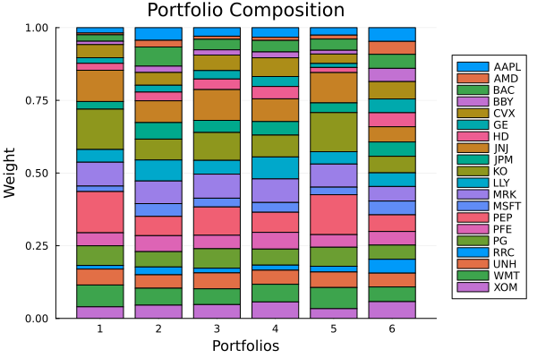
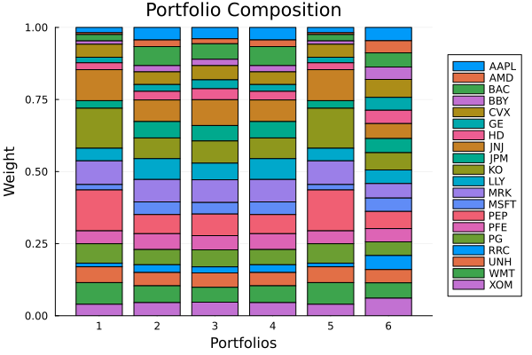

The source files can be found in examples/.
Multiple risk measures
This example shows how to use multiple risk measures.
Reach for multiple risk measures when no single measure captures everything you care about and you want one optimisation to answer to several at once — for example bounding variance while also controlling a tail measure like CVaR or drawdown. Any MeanRisk optimisation accepts a vector of risk measures, each with its own settings, so the objective and constraints can blend them rather than forcing you to pick one. If you instead want to trade several criteria off against each other across many portfolios, see the Pareto-surface example.
JuMPOptimiser's ret field mirrors r: one return term or a vector of them, each with its own JuMPReturnsSettings. The one asymmetry is deliberate — return terms are always a weighted sum, so no scalariser applies to them (ADR 0052). See ℓ1 uncertainty sets.
using PortfolioOptimisers, PrettyTables# Format for pretty tables.tsfmt = (v, i, j) -> begin if j == 1 return Date(v) else return v endend;resfmt = (v, i, j) -> begin if j == 1 return v else return isa(v, Number) ? "$(round(v*100, digits=3)) %" : v endend;1. ReturnsResult data
We will use the same data as the previous example.
using CSV, TimeSeries, DataFramesX = TimeArray(CSV.File(joinpath(@__DIR__, "..", "SP500.csv.gz")); timestamp = :Date)[(end - 252):end]pretty_table(X[(end - 5):end]; formatters = [tsfmt])# Compute the returnsrd = prices_to_returns(X)ReturnsResult
nx ┼ 20-element Vector{String}
X ┼ 252×20 Matrix{Float64}
nf ┼ nothing
F ┼ nothing
nb ┼ nothing
B ┼ nothing
ts ┼ 252-element Vector{Date}
iv ┼ nothing
ivpa ┼ nothing
pnl ┼ AssetPanel
│ pf ┼ Vector{AbstractPanelField}: AbstractPanelField[]
│ amsk ┼ 252×20 AllTrueMask
│ emsk ┴ 252×20 AllTrueMask
2. Preparatory steps
We'll provide a vector of continuous solvers as a failsafe.
using Clarabelslv = [Solver(; name = :clarabel1, solver = Clarabel.Optimizer, settings = Dict("verbose" => false), check_sol = (; allow_local = true, allow_almost = true)), Solver(; name = :clarabel3, solver = Clarabel.Optimizer, settings = Dict("verbose" => false, "max_step_fraction" => 0.9), check_sol = (; allow_local = true, allow_almost = true)), Solver(; name = :clarabel5, solver = Clarabel.Optimizer, settings = Dict("verbose" => false, "max_step_fraction" => 0.8), check_sol = (; allow_local = true, allow_almost = true)), Solver(; name = :clarabel7, solver = Clarabel.Optimizer, settings = Dict("verbose" => false, "max_step_fraction" => 0.70), check_sol = (; allow_local = true, allow_almost = true))];3. Multiple risk measures
3.1 Equally weighted sum
Some risk measures can use precomputed prior statistics which take precedence over the ones in PriorResult. We can make use of this to minimise the variance with different covariance matrices simultaneously.
We will also precompute the prior statistics to minimise redundant work. First let's create a vector of Variances onto which we will push the different variances. We'll use 5 variance estimators, and their equally weighted sum.
- Denoised covariance using the spectral algorithm.
- Gerber 1 covariance.
- Smyth Broby 1 covariance.
- Mutual Information covariance.
- Distance covariance.
- Equally weighted sum of all the above covariances.
For the multi risk measure optimisation, we will weigh each risk measure equally. It should give the same result as adding all covariances together, but not the same as averaging the weights of the individual optimisations.
pr = prior(HighOrderPriorEstimator(), rd.X)ces = [PortfolioOptimisersCovariance(; mp = MatrixProcessing(; dn = Denoise(; alg = SpectralDenoise()))), PortfolioOptimisersCovariance(; ce = GerberCovariance()), PortfolioOptimisersCovariance(; ce = SmythBrobyCovariance(; alg = SmythBroby1())), PortfolioOptimisersCovariance(; ce = MutualInfoCovariance()), PortfolioOptimisersCovariance(; ce = DistanceCovariance())]5-element Vector{PortfolioOptimisersCovariance{__T_ce, __T_mp, Nothing} where {__T_ce, __T_mp}}:
PortfolioOptimisersCovariance
ce ┼ Covariance
│ me ┼ SimpleExpectedReturns
│ │ w ┴ nothing
│ ce ┼ GeneralCovariance
│ │ ce ┼ SimpleCovariance: SimpleCovariance(true)
│ │ w ┴ nothing
│ alg ┼ FullMoment()
│ w ┴ nothing
mp ┼ MatrixProcessing
│ pdm ┼ Posdef
│ │ alg ┼ UnionAll: NearestCorrelationMatrix.Newton
│ │ kwargs ┴ @NamedTuple{}: NamedTuple()
│ dn ┼ Denoise
│ │ pdm ┼ Posdef
│ │ │ alg ┼ UnionAll: NearestCorrelationMatrix.Newton
│ │ │ kwargs ┴ @NamedTuple{}: NamedTuple()
│ │ alg ┼ SpectralDenoise()
│ │ args ┼ Tuple{}: ()
│ │ kwargs ┼ @NamedTuple{}: NamedTuple()
│ │ kernel ┼ typeof(AverageShiftedHistograms.Kernels.gaussian): AverageShiftedHistograms.Kernels.gaussian
│ │ m ┼ Int64: 10
│ │ n ┴ Int64: 1000
│ dt ┼ nothing
│ alg ┼ nothing
│ order ┴ NTuple{4, Symbol}: (:pdm, :dn, :dt, :alg)
PortfolioOptimisersCovariance
ce ┼ GerberCovariance
│ ve ┼ SimpleVariance
│ │ me ┼ SimpleExpectedReturns
│ │ │ w ┴ nothing
│ │ w ┼ nothing
│ │ corrected ┴ Bool: true
│ me ┼ SimpleExpectedReturns
│ │ w ┴ nothing
│ pdm ┼ Posdef
│ │ alg ┼ UnionAll: NearestCorrelationMatrix.Newton
│ │ kwargs ┴ @NamedTuple{}: NamedTuple()
│ t ┼ Float64: 0.5
│ alg ┴ Gerber1()
mp ┼ MatrixProcessing
│ pdm ┼ Posdef
│ │ alg ┼ UnionAll: NearestCorrelationMatrix.Newton
│ │ kwargs ┴ @NamedTuple{}: NamedTuple()
│ dn ┼ nothing
│ dt ┼ nothing
│ alg ┼ nothing
│ order ┴ NTuple{4, Symbol}: (:pdm, :dn, :dt, :alg)
PortfolioOptimisersCovariance
ce ┼ SmythBrobyCovariance
│ ve ┼ SimpleVariance
│ │ me ┼ SimpleExpectedReturns
│ │ │ w ┴ nothing
│ │ w ┼ nothing
│ │ corrected ┴ Bool: true
│ me ┼ SimpleExpectedReturns
│ │ w ┴ nothing
│ pdm ┼ Posdef
│ │ alg ┼ UnionAll: NearestCorrelationMatrix.Newton
│ │ kwargs ┴ @NamedTuple{}: NamedTuple()
│ c1 ┼ Float64: 0.5
│ c2 ┼ Float64: 0.5
│ c3 ┼ Int64: 4
│ n ┼ Int64: 2
│ alg ┼ SmythBroby1()
│ ex ┴ Transducers.ThreadedEx{@NamedTuple{}}: Transducers.ThreadedEx()
mp ┼ MatrixProcessing
│ pdm ┼ Posdef
│ │ alg ┼ UnionAll: NearestCorrelationMatrix.Newton
│ │ kwargs ┴ @NamedTuple{}: NamedTuple()
│ dn ┼ nothing
│ dt ┼ nothing
│ alg ┼ nothing
│ order ┴ NTuple{4, Symbol}: (:pdm, :dn, :dt, :alg)
PortfolioOptimisersCovariance
ce ┼ MutualInfoCovariance
│ ve ┼ SimpleVariance
│ │ me ┼ SimpleExpectedReturns
│ │ │ w ┴ nothing
│ │ w ┼ nothing
│ │ corrected ┴ Bool: true
│ bins ┼ HacineGharbiRavier()
│ normalise ┴ Bool: true
mp ┼ MatrixProcessing
│ pdm ┼ Posdef
│ │ alg ┼ UnionAll: NearestCorrelationMatrix.Newton
│ │ kwargs ┴ @NamedTuple{}: NamedTuple()
│ dn ┼ nothing
│ dt ┼ nothing
│ alg ┼ nothing
│ order ┴ NTuple{4, Symbol}: (:pdm, :dn, :dt, :alg)
PortfolioOptimisersCovariance
ce ┼ DistanceCovariance
│ metric ┼ Distances.Euclidean: Distances.Euclidean(0.0)
│ args ┼ Tuple{}: ()
│ kwargs ┼ @NamedTuple{}: NamedTuple()
│ w ┼ nothing
│ ex ┴ Transducers.ThreadedEx{@NamedTuple{}}: Transducers.ThreadedEx()
mp ┼ MatrixProcessing
│ pdm ┼ Posdef
│ │ alg ┼ UnionAll: NearestCorrelationMatrix.Newton
│ │ kwargs ┴ @NamedTuple{}: NamedTuple()
│ dn ┼ nothing
│ dt ┼ nothing
│ alg ┼ nothing
│ order ┴ NTuple{4, Symbol}: (:pdm, :dn, :dt, :alg)
Let's define a vector of variance risk measure using each of the different covariance matrices.
rs = [Variance(; sigma = cov(ce, rd.X)) for ce in ces]all_sigmas = zeros(length(rd.nx), length(rd.nx))for r in rs all_sigmas .+= r.sigmaendpush!(rs, Variance(; sigma = all_sigmas))6-element Vector{Variance{RiskMeasureSettings{Float64, Nothing, Bool}, Matrix{Float64}, Nothing, Nothing, SquaredSOCRiskExpr}}:
Variance
settings ┼ RiskMeasureSettings
│ scale ┼ Float64: 1.0
│ ub ┼ nothing
│ rke ┴ Bool: true
sigma ┼ 20×20 Matrix{Float64}
chol ┼ nothing
rc ┼ nothing
alg ┴ SquaredSOCRiskExpr()
Variance
settings ┼ RiskMeasureSettings
│ scale ┼ Float64: 1.0
│ ub ┼ nothing
│ rke ┴ Bool: true
sigma ┼ 20×20 Matrix{Float64}
chol ┼ nothing
rc ┼ nothing
alg ┴ SquaredSOCRiskExpr()
Variance
settings ┼ RiskMeasureSettings
│ scale ┼ Float64: 1.0
│ ub ┼ nothing
│ rke ┴ Bool: true
sigma ┼ 20×20 Matrix{Float64}
chol ┼ nothing
rc ┼ nothing
alg ┴ SquaredSOCRiskExpr()
Variance
settings ┼ RiskMeasureSettings
│ scale ┼ Float64: 1.0
│ ub ┼ nothing
│ rke ┴ Bool: true
sigma ┼ 20×20 Matrix{Float64}
chol ┼ nothing
rc ┼ nothing
alg ┴ SquaredSOCRiskExpr()
Variance
settings ┼ RiskMeasureSettings
│ scale ┼ Float64: 1.0
│ ub ┼ nothing
│ rke ┴ Bool: true
sigma ┼ 20×20 Matrix{Float64}
chol ┼ nothing
rc ┼ nothing
alg ┴ SquaredSOCRiskExpr()
Variance
settings ┼ RiskMeasureSettings
│ scale ┼ Float64: 1.0
│ ub ┼ nothing
│ rke ┴ Bool: true
sigma ┼ 20×20 Matrix{Float64}
chol ┼ nothing
rc ┼ nothing
alg ┴ SquaredSOCRiskExpr()
We'll minimise the variance for each individual risk measure and then we'll minimise the equally weighted sum of all risk measures.
results = [optimise(MeanRisk(; r = r, opt = JuMPOptimiser(; pe = pr, slv = slv))) for r in rs]mean_w = zeros(length(results[1].w))for res in results[1:5] mean_w .+= res.wendmean_w ./= 5res = optimise(MeanRisk(; r = rs, opt = JuMPOptimiser(; pe = pr, slv = slv)))pretty_table(DataFrame(:assets => rd.nx, :dn => results[1].w, :gerber1 => results[2].w, :smyth_broby1 => results[3].w, :mutual_info => results[4].w, :distance => results[5].w, :mean_w => mean_w, :sum_covs => results[6].w, :multi_risk => res.w); formatters = [resfmt])┌────────┬──────────┬──────────┬──────────────┬─────────────┬──────────┬──────────┬──────────┬────────────┐
│ assets │ dn │ gerber1 │ smyth_broby1 │ mutual_info │ distance │ mean_w │ sum_covs │ multi_risk │
│ String │ Float64 │ Float64 │ Float64 │ Float64 │ Float64 │ Float64 │ Float64 │ Float64 │
├────────┼──────────┼──────────┼──────────────┼─────────────┼──────────┼──────────┼──────────┼────────────┤
│ AAPL │ 0.0 % │ 0.001 % │ 0.0 % │ 1.263 % │ 0.0 % │ 0.253 % │ 0.0 % │ 0.0 % │
│ AMD │ 0.0 % │ 0.0 % │ 0.0 % │ 0.0 % │ 0.0 % │ 0.0 % │ 0.0 % │ 0.0 % │
│ BAC │ 0.0 % │ 0.517 % │ 0.001 % │ 2.166 % │ 2.279 % │ 0.993 % │ 1.678 % │ 1.68 % │
│ BBY │ 0.0 % │ 0.0 % │ 0.0 % │ 0.74 % │ 0.0 % │ 0.148 % │ 0.0 % │ 0.0 % │
│ CVX │ 18.188 % │ 9.564 % │ 13.135 % │ 4.007 % │ 9.961 % │ 10.971 % │ 10.335 % │ 10.334 % │
│ GE │ 0.0 % │ 2.421 % │ 0.222 % │ 2.702 % │ 4.347 % │ 1.939 % │ 3.856 % │ 3.856 % │
│ HD │ 0.0 % │ 0.022 % │ 0.0 % │ 2.713 % │ 3.792 % │ 1.305 % │ 3.39 % │ 3.39 % │
│ JNJ │ 81.812 % │ 24.63 % │ 30.058 % │ 17.458 % │ 17.28 % │ 34.247 % │ 18.71 % │ 18.71 % │
│ JPM │ 0.0 % │ 1.074 % │ 0.262 % │ 2.859 % │ 1.284 % │ 1.095 % │ 1.727 % │ 1.726 % │
│ KO │ 0.0 % │ 11.992 % │ 11.914 % │ 9.807 % │ 9.243 % │ 8.591 % │ 9.531 % │ 9.531 % │
│ LLY │ 0.0 % │ 0.001 % │ 0.0 % │ 4.874 % │ 0.241 % │ 1.023 % │ 0.0 % │ 0.0 % │
│ MRK │ 0.0 % │ 16.944 % │ 14.527 % │ 14.056 % │ 18.66 % │ 12.837 % │ 18.642 % │ 18.642 % │
│ MSFT │ 0.0 % │ 0.002 % │ 0.0 % │ 0.805 % │ 0.0 % │ 0.161 % │ 0.0 % │ 0.0 % │
│ PEP │ 0.0 % │ 15.273 % │ 18.248 % │ 8.543 % │ 8.089 % │ 10.031 % │ 9.096 % │ 9.095 % │
│ PFE │ 0.0 % │ 0.508 % │ 0.0 % │ 4.166 % │ 0.0 % │ 0.935 % │ 0.0 % │ 0.0 % │
│ PG │ 0.0 % │ 6.332 % │ 5.96 % │ 6.709 % │ 3.699 % │ 4.54 % │ 4.031 % │ 4.032 % │
│ RRC │ 0.0 % │ 0.0 % │ 0.0 % │ 0.434 % │ 0.0 % │ 0.087 % │ 0.0 % │ 0.0 % │
│ UNH │ 0.0 % │ 3.968 % │ 2.182 % │ 6.69 % │ 1.612 % │ 2.89 % │ 1.343 % │ 1.344 % │
│ WMT │ 0.0 % │ 4.945 % │ 3.489 % │ 6.549 % │ 12.797 % │ 5.556 % │ 11.414 % │ 11.414 % │
│ XOM │ 0.0 % │ 1.809 % │ 0.0 % │ 3.46 % │ 6.717 % │ 2.397 % │ 6.247 % │ 6.247 % │
└────────┴──────────┴──────────┴──────────────┴─────────────┴──────────┴──────────┴──────────┴────────────┘For extra credit we can do the same but maximising the risk-adjusted return ratio.
results = [optimise(MeanRisk(; r = r, obj = MaximumRatio(), opt = JuMPOptimiser(; pe = pr, slv = slv))) for r in rs]mean_w = zeros(length(results[1].w))for res in results[1:5] mean_w .+= res.wendmean_w ./= 5res = optimise(MeanRisk(; r = rs, obj = MaximumRatio(), opt = JuMPOptimiser(; pe = pr, slv = slv)))pretty_table(DataFrame(:assets => rd.nx, :dn => results[1].w, :gerber1 => results[2].w, :smyth_broby1 => results[3].w, :mutual_info => results[4].w, :distance => results[5].w, :mean_w => mean_w, :sum_covs => results[6].w, :multi_risk => res.w); formatters = [resfmt])┌────────┬──────────┬──────────┬──────────────┬─────────────┬──────────┬──────────┬──────────┬────────────┐
│ assets │ dn │ gerber1 │ smyth_broby1 │ mutual_info │ distance │ mean_w │ sum_covs │ multi_risk │
│ String │ Float64 │ Float64 │ Float64 │ Float64 │ Float64 │ Float64 │ Float64 │ Float64 │
├────────┼──────────┼──────────┼──────────────┼─────────────┼──────────┼──────────┼──────────┼────────────┤
│ AAPL │ 0.0 % │ 0.0 % │ 0.0 % │ 0.0 % │ 0.0 % │ 0.0 % │ 0.0 % │ 0.0 % │
│ AMD │ 0.0 % │ 0.0 % │ 0.0 % │ 0.0 % │ 0.0 % │ 0.0 % │ 0.0 % │ 0.0 % │
│ BAC │ 0.0 % │ 0.0 % │ 0.0 % │ 0.0 % │ 0.0 % │ 0.0 % │ 0.0 % │ 0.0 % │
│ BBY │ 0.0 % │ 0.0 % │ 0.0 % │ 0.0 % │ 0.0 % │ 0.0 % │ 0.0 % │ 0.0 % │
│ CVX │ 0.0 % │ 6.2 % │ 0.001 % │ 9.888 % │ 0.0 % │ 3.218 % │ 0.0 % │ 0.0 % │
│ GE │ 0.0 % │ 0.0 % │ 0.0 % │ 0.0 % │ 0.0 % │ 0.0 % │ 0.0 % │ 0.0 % │
│ HD │ 0.0 % │ 0.0 % │ 0.0 % │ 0.0 % │ 0.0 % │ 0.0 % │ 0.0 % │ 0.0 % │
│ JNJ │ 0.0 % │ 0.0 % │ 0.0 % │ 0.0 % │ 0.0 % │ 0.0 % │ 0.0 % │ 0.0 % │
│ JPM │ 0.0 % │ 0.0 % │ 0.0 % │ 0.0 % │ 0.0 % │ 0.0 % │ 0.0 % │ 0.0 % │
│ KO │ 0.0 % │ 0.002 % │ 0.0 % │ 5.688 % │ 0.0 % │ 1.138 % │ 0.0 % │ 0.0 % │
│ LLY │ 0.0 % │ 7.503 % │ 2.465 % │ 14.783 % │ 1.936 % │ 5.337 % │ 1.817 % │ 1.813 % │
│ MRK │ 68.452 % │ 59.478 % │ 65.42 % │ 46.763 % │ 50.398 % │ 58.102 % │ 52.198 % │ 52.204 % │
│ MSFT │ 0.0 % │ 0.0 % │ 0.0 % │ 0.0 % │ 0.0 % │ 0.0 % │ 0.0 % │ 0.0 % │
│ PEP │ 0.0 % │ 0.001 % │ 0.0 % │ 0.002 % │ 0.0 % │ 0.001 % │ 0.0 % │ 0.0 % │
│ PFE │ 0.0 % │ 0.0 % │ 0.0 % │ 0.0 % │ 0.0 % │ 0.0 % │ 0.0 % │ 0.0 % │
│ PG │ 0.0 % │ 0.0 % │ 0.0 % │ 0.0 % │ 0.0 % │ 0.0 % │ 0.0 % │ 0.0 % │
│ RRC │ 0.0 % │ 0.0 % │ 0.0 % │ 2.215 % │ 0.0 % │ 0.443 % │ 0.0 % │ 0.0 % │
│ UNH │ 0.0 % │ 0.0 % │ 0.0 % │ 0.0 % │ 0.0 % │ 0.0 % │ 0.0 % │ 0.0 % │
│ WMT │ 0.0 % │ 0.0 % │ 0.0 % │ 0.0 % │ 0.0 % │ 0.0 % │ 0.0 % │ 0.0 % │
│ XOM │ 31.547 % │ 26.814 % │ 32.113 % │ 20.659 % │ 47.666 % │ 31.76 % │ 45.985 % │ 45.983 % │
└────────┴──────────┴──────────┴──────────────┴─────────────┴──────────┴──────────┴──────────┴────────────┘3.2 Different weights and scalarisers
All optimisations accept multiple risk measures in the same way. We can also provide different weights for each measure and four different scalarisers, SumScalariser, MaxScalariser, LogSumExpScalariser which work for all optimisation estimators, and MinScalariser which only works for hierarchical ones.
That last restriction is the model's, not the number's. Minimising a minimum has no convex JuMP form, so a JuMP optimiser refuses MinScalariser — but at the value level, where the measures have already been evaluated and we are only combining numbers, all four scalarisers are admitted. Section 4 below reports with one of them.
For clustering optimisations, the scalarisers apply to each sub-optimisation, so what may be the choice of risk to "minimise" for one cluster may not be the minimal risk for others, or the overall portfolio. This inconsistency is unavoidable but should not be a problem in practice as the point of hierarchical optimisations is not to provide the absolute minimum risk, but a good trade-off between risk and diversification.
It is also possible to mix any and all compatible risk measures. We will demonstrate this by mixing the variance with the negative skewness.
In this example we have tuned the weight of the negative skewness to demonstrate how clusters may end up with different risk measures due to the choice of scalariser.
We will use the heirarchical equal risk contribution optimisation, precomputing the clustering results using the direct bubble hierarchy tree algorithm.
The HierarchicalEqualRiskContribution optimisation estimator accepts inner and outer risk measures and inner and outer scalarisers.
clr = clusterise(ClustersEstimator(; alg = DBHT()), pr.X)Clusters
res ┼ Clustering.Hclust{Float64}([-1 -13; -7 -4; … ; 12 17; 10 18], [0.1, 0.1111111111111111, 0.125, 0.14285714285714285, 0.16666666666666666, 0.2, 0.25, 0.3333333333333333, 0.5, 1.0, 0.125, 0.14285714285714285, 0.16666666666666666, 0.2, 0.25, 0.3333333333333333, 0.5, 1.0, 2.0], [5, 20, 17, 3, 9, 6, 2, 1, 13, 7, 4, 19, 14, 10, 16, 18, 11, 8, 12, 15], :DBHT)
S ┼ 20×20 Matrix{Float64}
D ┼ 20×20 Matrix{Float64}
P ┼ nothing
k ┴ Int64: 4
4. Visualising cluster structure and results
Before optimising, we can visualise the asset clustering structure derived from the correlation matrix.
Hierarchical clustering dendrogram.
using StatsPlots, GraphRecipesReordered correlation heatmap with cluster boundary boxes.
plot_dendrogram(clr, rd.nx)plot_clusters(clr, rd.nx)r = [Variance(), NegativeSkewness(; settings = RiskMeasureSettings(; scale = 0.1))]results = [optimise(HierarchicalEqualRiskContribution(; ri = r[1],# inner (intra-cluster) risk measure ro = r[1], # outer (inter-cluster) risk measure opt = HierarchicalOptimiser(; pe = pr, cle = clr))), optimise(HierarchicalEqualRiskContribution(; ri = r[2], ro = r[2], opt = HierarchicalOptimiser(; pe = pr, cle = clr))), optimise(HierarchicalEqualRiskContribution(; ri = r, ro = r,# scai = SumScalariser(),# inner (intra-cluster) scao = SumScalariser(),# outer (inter-cluster) opt = HierarchicalOptimiser(; pe = pr, cle = clr))), optimise(HierarchicalEqualRiskContribution(; ri = r, ro = r, scai = MaxScalariser(), scao = MaxScalariser(), opt = HierarchicalOptimiser(; pe = pr, cle = clr))), optimise(HierarchicalEqualRiskContribution(; ri = r, ro = r, scai = MinScalariser(), scao = MinScalariser(), opt = HierarchicalOptimiser(; pe = pr, cle = clr))), optimise(HierarchicalEqualRiskContribution(; ri = r, ro = r, scai = LogSumExpScalariser(), scao = LogSumExpScalariser(), opt = HierarchicalOptimiser(; pe = pr, cle = clr)))]pretty_table(DataFrame(:assets => rd.nx, :variance => results[1].w, :neg_skew => results[2].w, :sum_sca => results[3].w, :max_sca => results[4].w, :min_sca => results[5].w, :log_sum_exp => results[6].w); formatters = [resfmt])┌────────┬──────────┬──────────┬──────────┬─────────┬──────────┬─────────────┐
│ assets │ variance │ neg_skew │ sum_sca │ max_sca │ min_sca │ log_sum_exp │
│ String │ Float64 │ Float64 │ Float64 │ Float64 │ Float64 │ Float64 │
├────────┼──────────┼──────────┼──────────┼─────────┼──────────┼─────────────┤
│ AAPL │ 1.847 % │ 4.367 % │ 2.949 % │ 3.286 % │ 2.571 % │ 4.729 % │
│ AMD │ 0.627 % │ 2.3 % │ 1.056 % │ 1.115 % │ 1.354 % │ 4.442 % │
│ BAC │ 2.221 % │ 6.575 % │ 3.636 % │ 3.95 % │ 3.871 % │ 4.833 % │
│ BBY │ 1.138 % │ 2.166 % │ 1.781 % │ 2.024 % │ 1.275 % │ 4.552 % │
│ CVX │ 4.525 % │ 4.41 % │ 5.338 % │ 6.436 % │ 3.246 % │ 5.976 % │
│ GE │ 1.924 % │ 2.356 % │ 2.923 % │ 3.423 % │ 1.387 % │ 4.727 % │
│ HD │ 2.386 % │ 2.995 % │ 3.629 % │ 4.244 % │ 1.763 % │ 4.837 % │
│ JNJ │ 10.746 % │ 7.487 % │ 10.587 % │ 7.821 % │ 10.413 % │ 5.225 % │
│ JPM │ 2.623 % │ 5.682 % │ 4.153 % │ 4.666 % │ 3.345 % │ 4.916 % │
│ KO │ 13.86 % │ 7.188 % │ 9.593 % │ 7.509 % │ 13.431 % │ 5.7 % │
│ LLY │ 4.388 % │ 7.217 % │ 4.727 % │ 7.539 % │ 4.253 % │ 4.69 % │
│ MRK │ 8.205 % │ 7.77 % │ 8.283 % │ 8.117 % │ 7.951 % │ 5.009 % │
│ MSFT │ 1.886 % │ 4.4 % │ 3.008 % │ 3.356 % │ 2.59 % │ 4.738 % │
│ PEP │ 14.175 % │ 6.616 % │ 9.727 % │ 6.911 % │ 13.736 % │ 5.725 % │
│ PFE │ 4.473 % │ 5.51 % │ 4.639 % │ 5.756 % │ 4.334 % │ 4.684 % │
│ PG │ 6.756 % │ 5.271 % │ 6.711 % │ 5.506 % │ 6.547 % │ 4.869 % │
│ RRC │ 1.238 % │ 2.674 % │ 1.595 % │ 1.761 % │ 1.969 % │ 4.756 % │
│ UNH │ 5.489 % │ 4.62 % │ 5.485 % │ 4.826 % │ 5.319 % │ 4.76 % │
│ WMT │ 7.513 % │ 5.83 % │ 5.422 % │ 6.09 % │ 7.281 % │ 5.057 % │
│ XOM │ 3.98 % │ 4.566 % │ 4.759 % │ 5.662 % │ 3.362 % │ 5.773 % │
└────────┴──────────┴──────────┴──────────┴─────────┴──────────┴─────────────┘Compositions across scalarisers with weighted NegativeSkewness (scale = 0.1).
plot_stacked_bar_composition(results, rd)
When the weights are different enough that one risk measure domintes over the other in all contexts, then the results of the max and min scalarisers will be as expected, i.e. they will be as if only one risk measure was used.
r = [Variance(), NegativeSkewness()]results = [optimise(HierarchicalEqualRiskContribution(; ri = r[1],# inner (intra-cluster) risk measure ro = r[1], # outer (inter-cluster) risk measure opt = HierarchicalOptimiser(; pe = pr, cle = clr))), optimise(HierarchicalEqualRiskContribution(; ri = r[2], ro = r[2], opt = HierarchicalOptimiser(; pe = pr, cle = clr))), optimise(HierarchicalEqualRiskContribution(; ri = r, ro = r,# scai = SumScalariser(),# inner (intra-cluster) scao = SumScalariser(),# outer (inter-cluster) opt = HierarchicalOptimiser(; pe = pr, cle = clr))), optimise(HierarchicalEqualRiskContribution(; ri = r, ro = r, scai = MaxScalariser(), scao = MaxScalariser(), opt = HierarchicalOptimiser(; pe = pr, cle = clr))), optimise(HierarchicalEqualRiskContribution(; ri = r, ro = r, scai = MinScalariser(), scao = MinScalariser(), opt = HierarchicalOptimiser(; pe = pr, cle = clr))), optimise(HierarchicalEqualRiskContribution(; ri = r, ro = r, scai = LogSumExpScalariser(), scao = LogSumExpScalariser(), opt = HierarchicalOptimiser(; pe = pr, cle = clr)))]pretty_table(DataFrame(:assets => rd.nx, :variance => results[1].w, :neg_skew => results[2].w, :sum_sca => results[3].w, :max_sca => results[4].w, :min_sca => results[5].w, :log_sum_exp => results[6].w); formatters = [resfmt])┌────────┬──────────┬──────────┬─────────┬─────────┬──────────┬─────────────┐
│ assets │ variance │ neg_skew │ sum_sca │ max_sca │ min_sca │ log_sum_exp │
│ String │ Float64 │ Float64 │ Float64 │ Float64 │ Float64 │ Float64 │
├────────┼──────────┼──────────┼─────────┼─────────┼──────────┼─────────────┤
│ AAPL │ 1.847 % │ 4.367 % │ 3.946 % │ 4.367 % │ 1.847 % │ 4.631 % │
│ AMD │ 0.627 % │ 2.3 % │ 1.73 % │ 2.3 % │ 0.627 % │ 4.21 % │
│ BAC │ 2.221 % │ 6.575 % │ 5.377 % │ 6.575 % │ 2.221 % │ 4.905 % │
│ BBY │ 1.138 % │ 2.166 % │ 2.181 % │ 2.166 % │ 1.138 % │ 4.295 % │
│ CVX │ 4.525 % │ 4.41 % │ 4.959 % │ 4.41 % │ 4.525 % │ 6.229 % │
│ GE │ 1.924 % │ 2.356 % │ 3.063 % │ 2.356 % │ 1.924 % │ 4.465 % │
│ HD │ 2.386 % │ 2.995 % │ 3.833 % │ 2.995 % │ 2.386 % │ 4.612 % │
│ JNJ │ 10.746 % │ 7.487 % │ 8.942 % │ 7.487 % │ 10.746 % │ 5.19 % │
│ JPM │ 2.623 % │ 5.682 % │ 5.356 % │ 5.682 % │ 2.623 % │ 4.898 % │
│ KO │ 13.86 % │ 7.188 % │ 7.697 % │ 7.188 % │ 13.86 % │ 5.991 % │
│ LLY │ 4.388 % │ 7.217 % │ 5.76 % │ 7.217 % │ 4.388 % │ 4.727 % │
│ MRK │ 8.205 % │ 7.77 % │ 7.869 % │ 7.77 % │ 8.205 % │ 5.03 % │
│ MSFT │ 1.886 % │ 4.4 % │ 4.002 % │ 4.4 % │ 1.886 % │ 4.641 % │
│ PEP │ 14.175 % │ 6.616 % │ 7.491 % │ 6.616 % │ 14.175 % │ 5.937 % │
│ PFE │ 4.473 % │ 5.51 % │ 4.935 % │ 5.51 % │ 4.473 % │ 4.603 % │
│ PG │ 6.756 % │ 5.271 % │ 5.908 % │ 5.271 % │ 6.756 % │ 4.745 % │
│ RRC │ 1.238 % │ 2.674 % │ 2.098 % │ 2.674 % │ 1.238 % │ 4.874 % │
│ UNH │ 5.489 % │ 4.62 % │ 4.971 % │ 4.62 % │ 5.489 % │ 4.608 % │
│ WMT │ 7.513 % │ 5.83 % │ 5.175 % │ 5.83 % │ 7.513 % │ 5.303 % │
│ XOM │ 3.98 % │ 4.566 % │ 4.709 % │ 4.566 % │ 3.98 % │ 6.106 % │
└────────┴──────────┴──────────┴─────────┴─────────┴──────────┴─────────────┘Compositions across scalarisers with equal-weight NegativeSkewness. Notice Max collapses to NegativeSkewness-only and Min collapses to Variance-only.
plot_stacked_bar_composition(results, rd)
Note how the max scalariser produced the same weights as the negative skewness and the min scalariser produced the same weights as the variance. This is because in all cases, the same the value of the negative skewness was greater than that of the variance. A similar behaviour can be observed with other clustering optimisers. NearOptimalCentering can also have unintuitive behaviour when computing the risk bounds with an effective frontier MaxScalariser and MinScalariser due to the fact that each point in the efficient frontier can have a different risk measure dominating the others.
4. Reporting a vector of risk measures
Everything above optimises with several measures. Reporting works the same way: expected_risk takes the vector and collapses it to one number, never a per-element breakdown.
We do not need to re-state what we optimised. The result carries it: res.r is the vector of risk measures the optimisation ran under, stored resolved, and res.sca is the scalariser. Reading both off the result is the route that guarantees the reported figure is the optimised one.
res below is the maximum-ratio optimisation over all six variance measures from section 3.1.
rk_opt = expected_risk(res.r, res.w, res.pr; sca = res.sca)0.01332334672338337Naming the measures by hand gives the same number, because we happen to name the same vector and the same scalariser. If either differed, so would the figure — and fees and rf carry the same responsibility.
rk_hand = expected_risk(rs, res.w, res.pr; sca = SumScalariser())pretty_table(DataFrame(; :route => ["from the result", "named by hand"], :risk => [rk_opt, rk_hand]); title = "Both routes, one figure") Both routes, one figure
┌─────────────────┬───────────┐
│ route │ risk │
│ String │ Float64 │
├─────────────────┼───────────┤
│ from the result │ 0.0133233 │
│ named by hand │ 0.0133233 │
└─────────────────┴───────────┘The scalariser is a keyword at this level, so we can report the same portfolio under each of them. All four are admitted here, MinScalariser included — the hierarchical-only restriction is the JuMP model's, and no model is being built when we are combining numbers we already have.
scas = [SumScalariser(), MaxScalariser(), MinScalariser(), LogSumExpScalariser()]pretty_table(DataFrame(; :scalariser => ["Sum", "Max", "Min", "LogSumExp"], :risk => [expected_risk(res.r, res.w, res.pr; sca = s) for s in scas]); title = "One portfolio, six variance measures, four scalarisers")One portfolio, six variance measures, four scalarisers
┌────────────┬─────────────┐
│ scalariser │ risk │
│ String │ Float64 │
├────────────┼─────────────┤
│ Sum │ 0.0133233 │
│ Max │ 0.00666167 │
│ Min │ 0.000152821 │
│ LogSumExp │ 1.79398 │
└────────────┴─────────────┘Among the three that stay in the units of the measure, the ordering is forced: Min ≤ Max ≤ Sum, because each element is weighted by its own settings.scale and then Sum adds all six positive contributions while Max and Min keep a single one.
LogSumExpScalariser is the odd one out, and by a wide margin — here it reports 1.79 against Sum's 0.0133. It is a smooth maximum computed in log space, log(Σᵢ exp(wᵢ rᵢ)), so it is not a weighted average of the risks and does not stay in their units. When the risks are small its value is dominated by log(N), the count of measures, rather than by the risks themselves. Read it as a soft-max dial, never as a risk figure comparable with the other three.
A hierarchical result carries its measures the same way, one pair per level. HierarchicalEqualRiskContribution holds an intra-cluster measure and scalariser and an inter-cluster pair, so its result carries ri, scai, ro and scao, all resolved.
res_herc = results[3]rk_herc = expected_risk(res_herc.ro, res_herc.w, res_herc.pr; sca = res_herc.scao)0.002262226567821218This page was generated using Literate.jl.